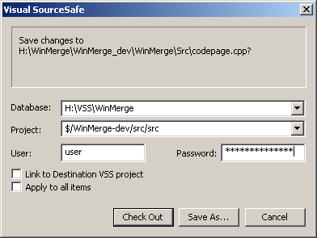

WinMerge provides basic integration with Visual SourceSafe and ClearCase version control systems. Integration means WinMerge checkouts file edited from version control. User can later checkin changed file with version control system's tools. WinMerge does not provide history or checkin tools.
Version control support relies on fact that files in version control system are read-only in local disk. So if local file is read-only and version control integration is enabled WinMerge assumes file is version controlled and shows checkout dialog.
To enable Visual SourceSafe integration for version controlled directory:
Enable Visual SourceSafe integration from ->+Versioning System
Open version controlled file/directory to WinMerge
Edit version controlled file
Save changes - now WinMerge detects file is read-only and assumes it is under version control. WinMerge shows following dialog:

WinMerge searches for SourceSafe databases from system and fills them to first dropdown list in dialog. So you first have to select right database if there are more than one databases in your system.
Project path is file path relative to SourceSafe database base path. Be careful with this since most errors are because of wrong project path. Keep in mind that when you change folder you have to change project path too!
WinMerge remembers password for current session, but does not store it. So you don't need to retype password again in same session. But after closing WinMerge you have to retype password. This is to keep your password safe!
Apply to all items -checkbox allows to checkout several files when copying files in directory compare. All files must reside in same directory to use this feature.
Unfortunately, VSS is horribly silent about error conditions (other than the fact that one occurred). If an operation fails, one of the following conditions could be at fault:
Another user may have the file checked out with exclusive access
You may have specified the wrong project
You may have entered the project name incorrectly
Did you use VSS path syntax (ie: $/MyProject/res)
Your connection to the VSS server computer may be hosed